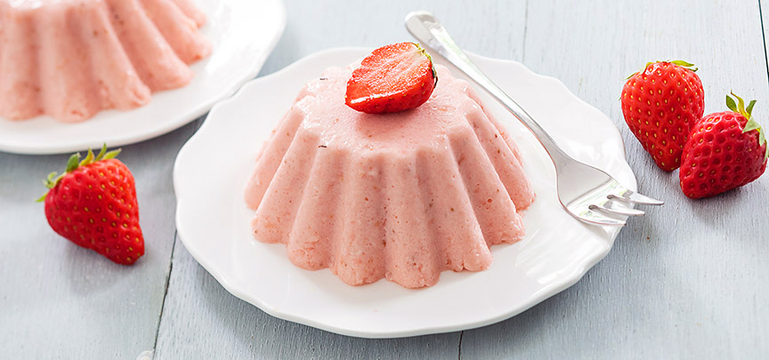

Aardbeien bavarois
Ingrediënten
- 250 gr aardbeien
- 250 gr slagroom
- 3 blaadjes gelatine
- 2 eetlepels citroensap
- 75 gr suiker
- zonnebloemolie om in te vetten
Benodigdheden
- Staafmixer
- mixer
- Puddingvormpjes 10 cm
Bereidingwijze
- Week de blaadjes gelatine in koud water. Pureer de aardbeien met de staafmixer helemaal fijn.
- Doe de aardbeiensaus in een pannetje samen met het citroensap en verwarm dit, het hoeft niet te koken.
- Knijp de gelatine uit en voeg toe aan de warme aardbeiensaus, laat het mengsel vervolgens weer iets afkoelen, niet te ver anders wordt deze al stijf.
- Mix de slagroom en de suiker lobbig.
- Voeg de aardbeiensaus met de opgeloste gelatine toe en mix er doorheen.
- Vet de vormpjes in met een beetje zonnebloemolie, zo laat de bavarois straks beter los, of gebruik siliconen puddingvormpjes.
- Giet het mengsel in de vormpjes en zet minimaal 3 uur in de koelkast, of een hele nacht.
- Doe wat warm water in een kom en houd de onderkant van de vormpjes kort hierin zodat de aardbeien bavarois makkelijk los komt.
- Stort de bavarois daarna op een bordje. Garneer de bavarois eventueel met wat extra verse aardbeien.

Tip: Wil je geen risico lopen dat de bavarois niet goed uit de vormpjes komt, serveer de aardbeien bavarois dan in een glaasje die je laat opstijven in de koelkast.